0先认识它：这不是普通聊天机器人
它把学校文件“编译”成结构化的 Wiki 词条，回答时再回到原始文件核对。所以它能告诉你“依据是哪份文件的哪一段”。
像问辅导员一样提问
奖助学金、请假考勤、宿舍、心理、就业、档案……用日常话说就行。
每个回答都带出处
回答里的 [1] 可以展开为“词条 + 原始文件 + 章节 + 原文摘录”。
资料随时能补
辅导员在手机上贴链接、粘文字或上传文件，几分钟后就能被问到。
它是怎么工作的？
重要：词条只是索引，最终以原始文件为准。回答末尾也会提醒“以学校官方通知为准”。
学学生篇：问问题、看引用
不需要安装 App，用手机浏览器或电脑浏览器打开同一个地址即可。
1. 打开助手
- 用手机或电脑浏览器打开老师给的地址
例如
https://xxx.edu.cn或机房内网地址；如果老师发了二维码，也可以直接扫码打开（推荐）。 - 老师/电脑端也可以直接展示二维码
电脑端右上角「手机扫码」会让手机扫码打开；扫码是默认方式。
- 看到“你好，我是小南”就说明已连上
下方会列出常见问题快捷入口，点一下就能直接提问。
- 想放到桌面？
iPhone 用 Safari 打开 → 分享 → “添加到主屏幕”；Android 用 Chrome 菜单 → “安装应用 / 添加到主屏幕”。需要 HTTPS 地址才支持安装；普通 HTTP 只能当网页用。
2. 提一个好问题
在底部输入框输入问题，点“发送”或按 Enter。回答通常需要 2–10 秒。
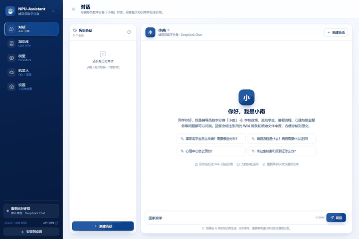
动图：输入“国家奖学金怎么申请？需要哪些材料？”→ 发送 → 看到回答和引用。实际回答速度取决于网络和模型。
这样问，更容易得到准确回答
| 推荐问法 | 不太推荐 |
|---|---|
| 国家奖学金申请需要哪些材料？ | 怎么办 |
| 病假需要什么证明？请假流程是什么？ | 这个怎么弄 |
| 心理中心怎么预约？在哪个楼？ | 我很难受（紧急情况请直接联系辅导员/心理热线） |
| 毕业生档案和报到证怎么办？ | 帮我写一篇论文 |
小技巧：一次只问一件事；如果回答不够具体，可以继续追问“那需要去哪个办公室？”“截止时间是什么时候？”。
不要发送：身份证号、银行卡号、密码、验证码、未公开的个人隐私。助手不是人工客服，紧急事项请直接找辅导员。
3. 看懂回答和引用
回答里的蓝色编号 [1] 和底部的“引用词条”卡片就是出处。点开卡片，可以一层层看到原始文件。
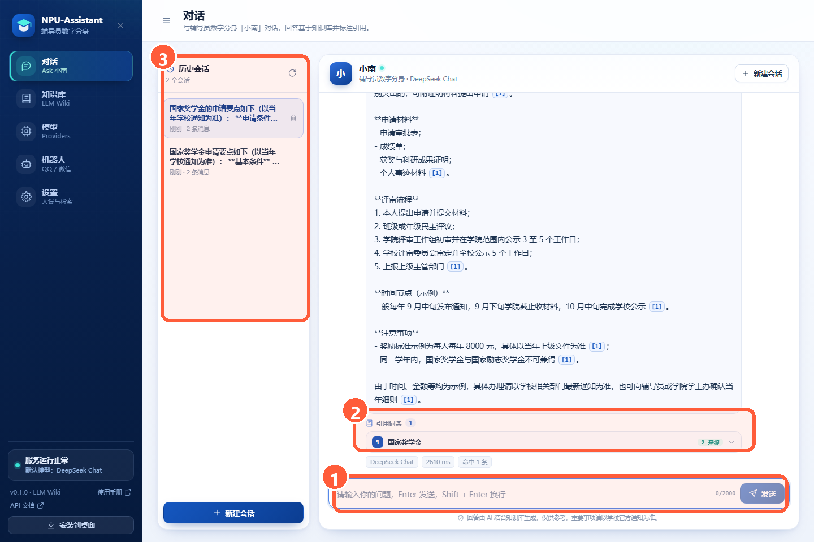
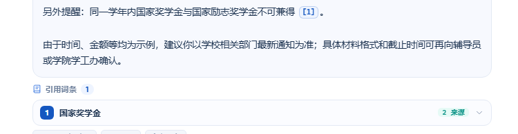
- 先看回答
把回答当作“快速导航”，不要当作最终法律/政策文本。
- 点开引用
展开后能看到：来自哪个词条、哪份文件、哪个章节、原文摘录。
- 核对原文
如果回答和原文有冲突，以原始文件/学校最新通知为准，并可反馈给辅导员。
4. 没有答案、回答不准怎么办
- 看到“暂未收录”：说明知识库暂时没有这份资料。换一个关键词再试，或把问题告诉辅导员，请他把文件收进知识库。
- 回答和你知道的不一样：点开引用核对原文；如果原文也过时了，请辅导员更新源文件后“重新编译”。
- 问到个人办理进度、成绩、处分等：助手查不到个人系统，请直接联系辅导员或对应部门。
- 心理危机/人身安全：不要等助手回答，立即联系辅导员、心理中心或拨打急救/心理热线。
一句话原则：助手负责“帮你快速找到文件里怎么说”，最终解释权在学校。
5. 隐私与注意
- 不要输入身份证号、银行卡、密码、验证码等敏感信息。
- 聊天记录会保存在学校部署的服务器上，管理员为运维需要可以查看；请只问与校园事务相关的问题。
- 回答由 AI 生成，可能有误；涉及钱、处分、毕业、档案等，务必以官方通知为准。
- 如果不想保留记录，可以点“新建会话”开始新对话（历史记录是否可删由管理员配置）。
辅辅导员篇：把资料收进知识库
第一次使用只需登录一次令牌；之后在手机上就能完成 90% 的日常维护。
6. 第一次使用：登录管理令牌
管理令牌相当于“管理员密码”，由部署老师设置（环境变量 NPU_ADMIN_TOKEN）。手机只需填一次，之后自动记住。
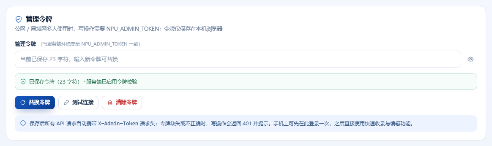
- 打开「设置」页
手机底部菜单或左侧栏找到“设置”。
- 找到「移动端与管理令牌」卡片
输入管理员给的令牌（一长串字母数字），点“保存令牌”。
- 看到“已保存令牌（N 字符）· 服务端已启用令牌校验”
说明登录成功；可以点“测试连接”再确认一次。
- 如果提示 401 / 需要管理员令牌
回到这里重新填写；注意不要多复制空格，也不要把它发到群里。
安全：令牌只保存在当前浏览器；换手机/换浏览器需要重新填。不要把令牌截图发群或写进公开文档。
如果服务端还没启用令牌：设置页会显示「启用服务端令牌」按钮。输入 ≥16 位随机令牌并保存，会立即在本机启用并记住（重启仍有效），公网扫码按钮随后就能用；只在手机浏览器里填令牌不会改变服务端配置。
7. 手机快速收录：链接、文本、文件
打开「知识库」页，最上方就是“快速收录”卡片。它是手机端最常用的功能。
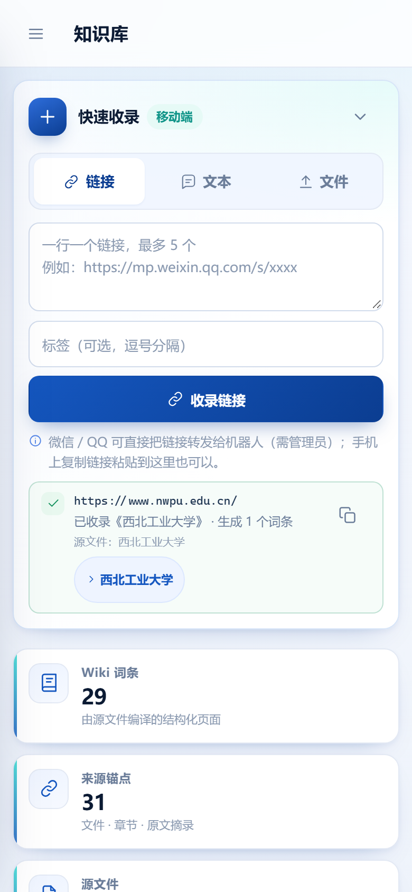
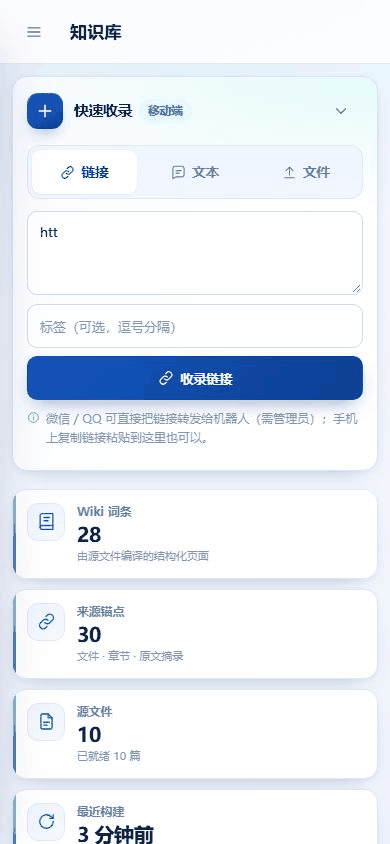
动图：粘贴学校官网链接 → 点“收录链接” → 几秒后显示“已收录《西北工业大学》· 生成 1 个词条”。
三种收录方式怎么选
| 方式 | 适合 | 操作要点 |
|---|---|---|
| 链接 | 学校官网/部门网页/公众号文章 | 一行一个，最多 5 条；可加标签；逐条显示成功/重复/失败原因。 |
| 文本 | 微信里复制的通知、公众号正文、没有网页的资料 | 填标题（可留空取首行）+ 正文（至少 30 字），点“收录文本”。 |
| 文件 | Word / PDF / Excel / Markdown / TXT / HTML | 点“文件”标签选择文件，≤20MB；上传后自动编译。 |
微信里的文章：可以直接复制链接粘贴；如果提示“微信验证/反爬页面”或“内容过大”，在微信中打开文章 → 复制全文 → 用“文本”方式粘贴正文，最稳。
常见失败原因
| 提示 | 原因 | 怎么办 |
|---|---|---|
| 网页内容过大（上限 8MB） | 文章内嵌图片/脚本太多 | 改用“文本”粘贴正文；或请部署老师调大 NPU_URL_IMPORT_MAX_BYTES。 |
| 微信验证/反爬页面 | 公众号限制服务器抓取 | 复制正文用“文本”收录。 |
| 重复 | 这个链接已经收过 | 不会重复编译；直接打开已有词条即可。 |
| 需要管理员令牌 / 401 | 令牌没填或失效 | 到“设置 → 移动端与管理令牌”重新填写。 |
| 无法解析域名 / 超时 | 链接写错、网络不稳、网站限制 | 检查链接能否在浏览器公开打开；稍后重试。 |
8. 检查收录结果：源文件列表
收录成功后，知识库的“源文件”标签会多出一条记录；状态为“已就绪”就表示已经编译完成，可以被学生问到。
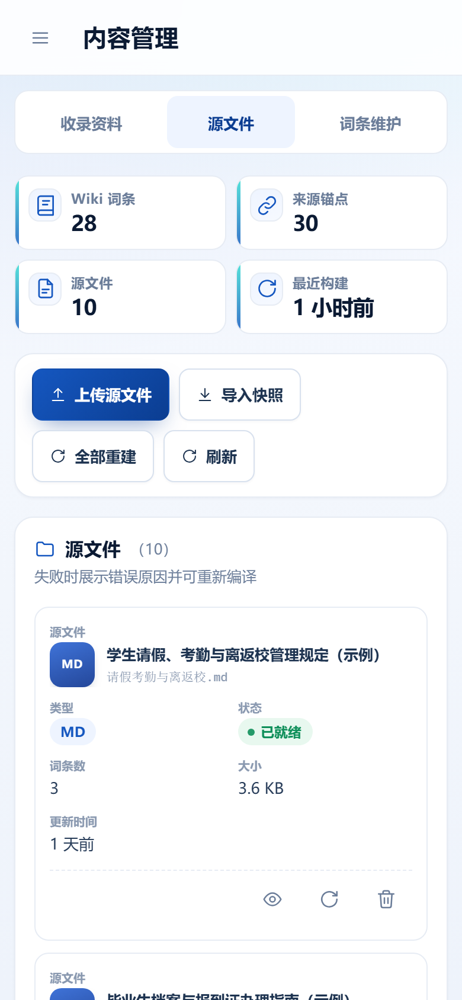
- 已就绪：可以直接用；点“眼睛”查看由它生成的词条。
- 失败：点“刷新”图标重新编译；失败原因会显示在卡片上（如模型未配置、文件格式不支持）。
- 删除：会删除源文件和由它生成的词条；删除前会二次确认，种子资料请谨慎操作。
- 全部重建：模型更换或大量文件更新后使用；需要等待轮询完成，不要重复点击。
建议：每次收录后顺手点开生成的词条，检查标题、正文和来源是否对得上；有问题就“重新编译”或换文本方式。
9. 微信 / QQ 机器人：转发链接就能收录
辅导员在 QQ 或微信里把文章链接转发给机器人，机器人自动收录并回复结果；学生也可以直接在 QQ/微信里提问。
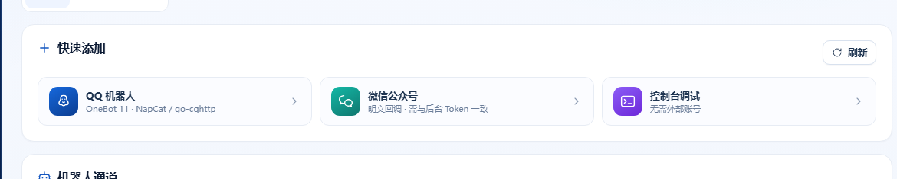
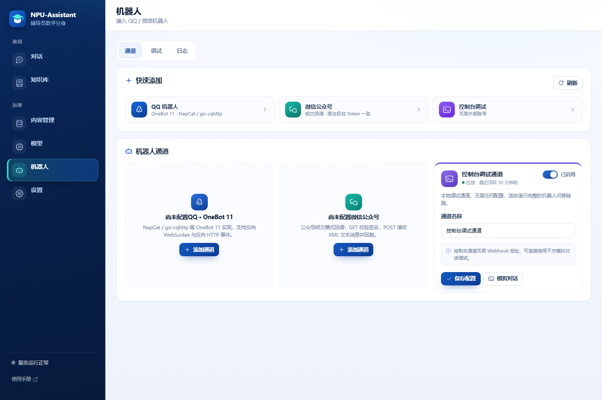
- 添加通道
QQ：NapCat / go-cqhttp 等 OneBot 11 实现；微信：公众号后台。填写 token、管理员工号/openid。
- 把 Webhook 填到平台
通道卡片会生成 Webhook 地址；复制到 NapCat 或公众号后台。
- 管理员转发链接
在 QQ/微信私聊机器人发送文章链接，或发送
#入库 链接。 - 查看结果
QQ 会直接回复“已收录”；微信 5 秒内先回“已开始收录”，结果到知识库页查看。
| 发送内容 | 效果 |
|---|---|
https://… | 自动识别并收录该链接 |
#入库 https://… | 显式收录（链接不在开头时使用） |
#状态 | 查看词条数、源文件数、默认模型 |
#帮助 | 查看可用命令和你的用户 ID |
谁算管理员？怎么区分？
机器人不按昵称、群名片或“看起来像老师”来判断，而是按平台提供的用户 ID 精确匹配通道配置里的 admin_user_ids：
| 渠道 | 管理员 ID 是什么 | 怎么获取 |
|---|---|---|
| QQ（OneBot 11） | 发送者的 QQ 号 | 用该 QQ 私聊机器人发送 #帮助，回复里会显示“你的用户 ID” |
| 微信公众号 | 发送者的 openid（FromUserName） | 给公众号发送 #帮助；或看后端日志 / 机器人消息日志 |
| 控制台调试 | 模拟时填写的用户 ID | 仅本地调试使用，不是真实安全边界 |
- 管理员：ID 在
admin_user_ids中 → 可直接转发链接、发#入库/#收录/#状态；这些消息不会进入学生问答历史。 - 普通用户：只能正常提问；发链接会被当作普通问题回答，不会入库；发
#入库/#状态会收到“仅限管理员使用”。 - 管理员问普通问题仍然走问答；只有“链接/收录命令”才触发入库。
- 每个通道单独配置：QQ 号和微信 openid 不是一回事；可以填多个，英文逗号分隔。
- 群聊默认必须 @ 机器人（
group_mention_only）；配置管理员后在群里 @ 机器人转发链接同样有效。
安全：管理员身份依赖平台回调的 token/签名 校验，不是靠昵称；未通过校验的伪造 webhook 会直接拒绝（OneBot 空 token 403、微信签名/时间窗/nonce 校验）。不要把机器人 token、管理员 ID 发到公开群；公众号 Token 必须与后台一致且不能使用公开默认值。
10. 模型与设置
“模型”页用来选择回答和编译使用的 AI 模型。通常部署时已经配好，日常不需要改。
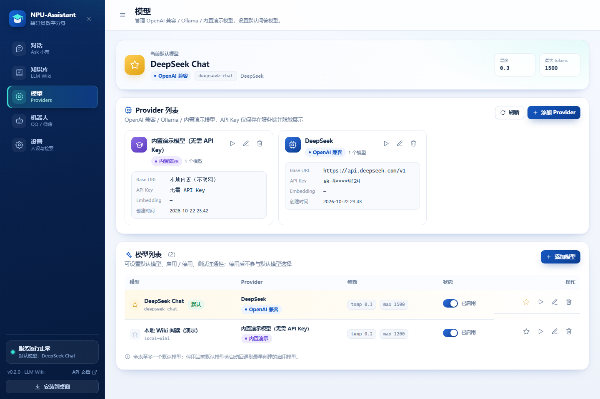
- 换模型：选一个已启用的模型，点“设为默认”；下次对话生效。
- 测试连接：失败先检查 Key、余额、网络；不会把 Key 显示在页面。
- 设置页：可以改辅导员名字、快捷问题、引用开关、回复尾注，改完记得保存。
11. 备份与恢复
知识库和聊天记录都在 backend/data 下。建议每周备份一次，重要更新前也备份。
# 在项目根目录运行（Windows PowerShell）
.\scripts\backup.ps1
# 备份文件会生成在 backups\ 下，包含：
# app.db（数据库）、uploads\（源文件副本）、wiki_seed.json（预编译快照）- 把备份压缩包复制到网盘/移动硬盘，不要只留在本机。
- 恢复：先停止服务 → 用备份替换
backend/data/app.db和uploads→ 再启动。 - 更换电脑/重装系统前，务必先备份。
不要在服务运行时直接复制数据库文件；请用 backup.ps1（它会做一致性快照）。
12. 扫码联网与公网访问
v0.1.1 默认方式：扫码。手机和电脑用的是同一个服务，不需要单独安装“移动端”。部署老师启动时加 -Lan，电脑打开页面后点右上角「手机扫码」，手机扫码即可。
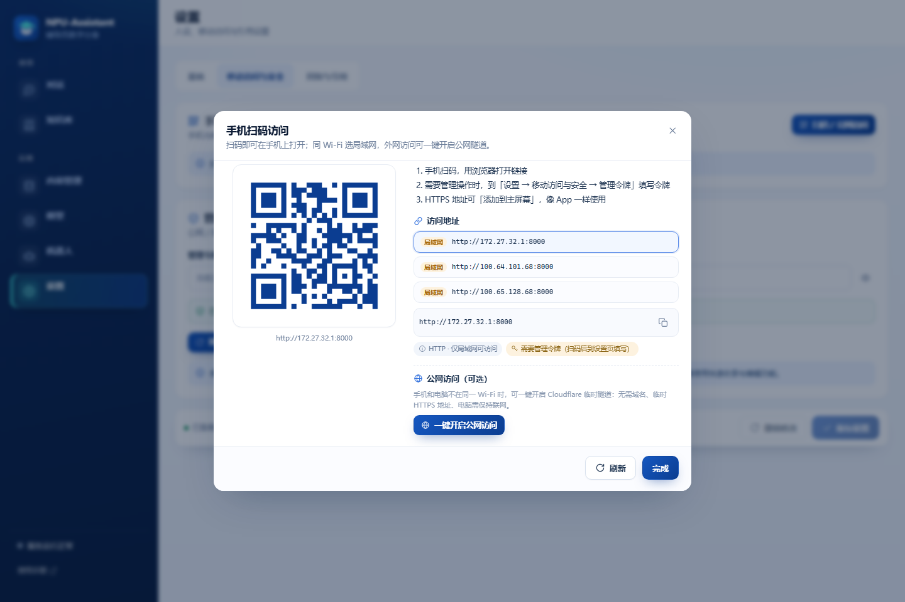
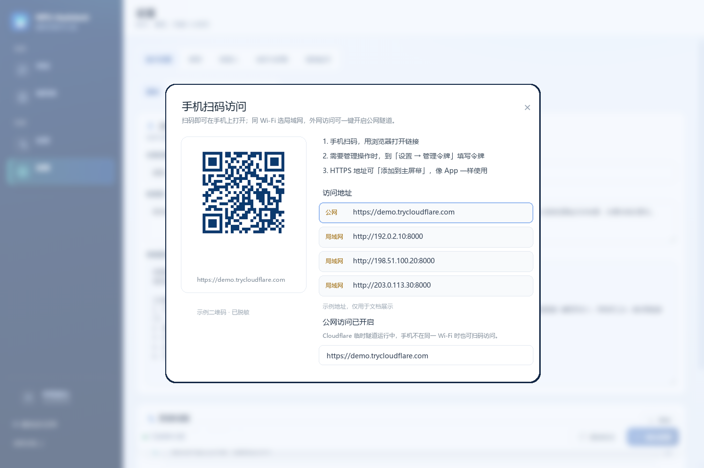
https://*.trycloudflare.com，并显示 HTTPS / PWA 标签。- 电脑启动服务（同一 Wi-Fi）
.\scripts\run.ps1 -Lan；脚本会生成管理令牌并打印手机地址。 - 电脑打开页面，点右上角「手机扫码」
弹窗里默认选第一个地址；如果不是电脑 Wi-Fi 的网段，点其他「局域网」地址切换二维码。
- 手机扫码 → 浏览器打开
需要管理操作时，到手机「设置 → 移动端与管理令牌」填电脑上打印的令牌；HTTPS 地址可「添加到主屏幕」。
- 需要外网/公网时，点「一键开启公网访问」
需电脑已安装
cloudflared且服务已设置NPU_ADMIN_TOKEN（用-Lan启动会自动生成）。成功后二维码自动切换为https://xxx.trycloudflare.com，用完可点「关闭公网访问」。
# 安装 cloudflared（Windows）
winget install Cloudflare.cloudflared
# 可选：固定公网地址（命名隧道 / 反向代理）
$env:NPU_PUBLIC_URL = "https://npu.example.edu.cn"
.\scripts\run.ps1 -Lan- 手机打不开：确认同一 Wi-Fi；用扫码弹窗里的局域网地址；首次需放行防火墙；服务是否在运行。
- PWA 安装：需要 HTTPS。局域网 HTTP 只能当网页用；公网隧道/HTTPS 地址可安装。
- 公网安全：临时隧道地址公网可访问，开启前必须设置强随机
NPU_ADMIN_TOKEN；不要把 8000 裸端口直接映射公网。
?常见问题
先在这里找答案；解决不了再联系部署老师。
手机打不开页面 / 一直转圈
① 确认手机和电脑在同一个 Wi-Fi；② 用启动脚本打印的 Wi-Fi 地址，不要用 127.0.0.1；③ 首次使用需在电脑上放行防火墙 8000 端口；④ 确认服务仍在运行（电脑上不要关窗口）。
提示“该操作需要管理员令牌” / 401
到「设置 → 移动端与管理令牌」粘贴令牌并保存，然后重试。令牌由部署老师提供；如果服务重启后令牌变了（例如用 -Lan 每次自动生成），需要重新填一次。令牌输入时注意不要带空格。
链接收录失败 / 提示超过 8MB
公众号文章、带大量图片的页面可能超过抓取上限。最稳的办法：在微信中打开文章 → 复制全文 → 回到知识库用“文本”方式粘贴正文。确实需要抓大页面时，请部署老师调大 NPU_URL_IMPORT_MAX_BYTES。
公众号文章提示“微信验证/反爬页面”
微信会限制服务器抓取。复制文章正文，用“文本”收录即可；不要反复重试同一链接。
为什么回答里没有引用？
闲聊/问候类问题会直接回答，不引用资料；如果问题涉及校园政策但知识库确实没有，会提示“暂未收录”。另外，管理员可以在设置中关闭“引用展示”，此时引用区不显示但回答仍来自知识库。
手机上找不到“安装到桌面”
PWA 安装需要 HTTPS（或 localhost）。局域网 HTTP 地址只能当网页使用；iPhone 需用 Safari：分享 → 添加到主屏幕。Android Chrome：右上角菜单 → 安装应用/添加到主屏幕。
聊天记录谁能看到？
记录保存在学校部署的服务器；配置了管理令牌时，历史会话只有管理员能查看。请不要发送身份证号、密码、银行卡等敏感信息；紧急事项直接联系辅导员。
收录后多久能被学生问到？
文本/文件通常几秒到十几秒；网页需要先抓取再编译。看到源文件状态“已就绪”即可。失败可点“重新编译”，或改用文本方式。
删除源文件会怎样？
会同时删除由它生成的词条，并可能影响引用这些词条的回答。删除前会二次确认；种子资料（示例文件）受保护，不能直接删除。建议先备份。
A术语表
| 词 | 在这里是什么意思 |
|---|---|
| LLM Wiki | 把原始文件用大模型整理成结构化“词条”的知识库方式；回答时先找词条，再回原文核对。 |
| 词条 | 一份文件编译出的结构化页面，例如“国家奖学金”“请假办理流程”。一个文件可生成多个词条。 |
| 来源锚点 | 词条对应的“文件 + 章节 + 原文摘录”，用来核对回答依据。 |
| 引用 [1] | 回答中的编号，对应下方引用卡片；点开可看词条和原始文件。 |
| 管理令牌 | 管理员写操作的口令（NPU_ADMIN_TOKEN）；手机登录一次后自动携带。 |
| 源文件 | 上传/收录进来的原始资料；是知识库唯一事实来源。 |
| 重新编译 | 源文件更新后，让 AI 重新生成词条；不会丢失原文件。 |
| PWA | 可“安装到桌面”的网页应用；需要 HTTPS。 |
B安全清单（辅导员/部署老师）
- 公网/局域网多人使用：必须设置强随机
NPU_ADMIN_TOKEN（≥24 位），不要把令牌发群。 - 不要用
NPU_BOT_ALLOW_INSECURE=1或空 Token 上线；OneBot/微信通道 token 必须是自定义强随机值。 - 公众号后台 Token 与通道配置保持一致；服务器时间要准（NTP），否则回调会失败。
- 只把真正需要收录权限的老师加入
admin_user_ids；群聊里任何人都不能触发入库。 - 公网必须 HTTPS（Cloudflare Tunnel / Nginx）；不要把 8000 裸端口直接映射公网。
- 定期运行
.\scripts\backup.ps1，并把备份复制到另一台设备/网盘。 - 模型 API Key 只保存在服务器；不要截图、不要写进文档或聊天。
- 离职/换人时：更换管理令牌、机器人 token、公众号 Token。
↑ 回到顶部 · 本手册随功能更新，界面细节可能略有差异。